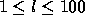

| Word-Search Wonder |
The Pyrates Restaurant was starting to fill up as Valentine McKee walked in. She scanned the crowd for her sister, brother-in-law, and nephew. Seeing her sister waving from the far end of the restaurant, she made her way back to their booth. ``Hi, Valentine,'' her sister and brother-in-law, Niki and Dennis Chapman, greeted her.
``Hi, guys,'' she replied. ``What are you doing, Wade?'' she asked her nephew. He was busy working on one of the restaurant's activity sheets with a crayon.
``I'm doing a word search game,'' Wade explained. ``I have to find all of these words in this big mess of letters. This is really hard.'' Wade looked intently at the paper in front of him.
``Can I help?'' asked Valentine, looking across the table at the activity sheet.
``Sure. These are the words we're looking for. They're the names of different kinds of Planes, Trains, and Automobiles.''
The first line of input will specify the length (in characters) of the sides of the letter matrix (the matrix of letters will be square). The length, l, will be in the range  . The next l lines of input will be the matrix itself, each line will contain l uppercase letters.
A list of words will follow. Each word will be on a line by itself; there will be 100 or fewer words. Each word will be 100 or fewer characters long, and will only contain uppercase letters.
The final line of input will contain a single zero character.
Your program should attempt to find each word from the word list in the puzzle. A word is ``found'' if all the characters in the word can be traced in a single (unidirectional) horizontal, vertical, or diagonal line in the letter matrix. Words may not ``wrap around'' rows or columns, but horizontal and diagonal words may proceed from right to left (``backwards''). For each word that is found, your program should print the coordinates of its first and last letters in the matrix on a single line, separated by a single space. Coordinates are pairs of comma-separated integers (indexed from 1), where the first integer specifies the row number and the second integer specifies the column number.
If a word is not found, the string ``Not found'' should be output instead of a pair of coordinates.
Each word from the input can be ``found'' at most once in the puzzle.
5 EDEEE DISKE ESEEE ECEEE EEEEE DISC DISK DISP 0
1,2 4,2 2,1 2,4 Not found